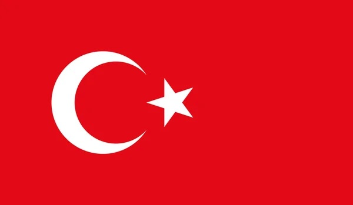
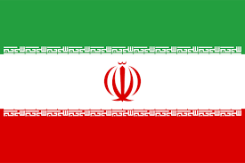

|
 A Turquia usa os refugiados como moeda de troca nas negociações com os países europeus desde que a crise de refugiados chegou em seu ápice, em 2015, quando milhares de pessoas que fugiam da guerra civil síria, da fome e da pobreza morreram ao tentar atravessar o Mar Mediterrâneo em embarcações precárias. Hoje, muitos dos refugiados ainda vivem em campos superlotados e com infraestrutura precária. A Turquia já alberga 3,7 milhões de refugiados sírios, e quase mais um milhão de outras nacionalidades – é o país do mundo com mais refugiados em termos absolutos. Erdogan repete frequentemente que o país já gastou €20 mil milhões no seu acolhimento. Para tentar mitigar o fluxo de refugiados, a União Europeia e a Turquia assinaram um acordo em 2016 no qual ficaria sob responsabilidade turca a tarefa de impedir as travessias dos imigrantes pela fronteira. Em troca, os europeus contribuiriam financeiramente para mantê-los na Turquia. A decisão de Ancara de “abrir as portas”, porém, viola o tratado e é uma via para extrair o apoio europeu contra Assad e a Rússia, que apoia militarmente o regime de Damasco..
|
 Genebra, 10 de agosto de 2021, A Agência da ONU para Refugiados,(ACNUR) está extremamente preocupada com a rápida escalada do conflito no Afeganistão. Com quase um milhão de pessoas reconhecidas como refugiadas em seu país, o governo do Irã tem acolhido consistentemente afegãos que fogem de conflitos e violência por mais de 40 anos. O país também inclui afegãos de forma exemplar nos sistemas nacionais de saúde e educação. O ACNUR apela ao governo para continuar esta tradição vital de hospitalidade e proteção. Nenhum deslocamento em grande escala pelas fronteiras do Afeganistão foi observado este ano. Qualquer grande afluxo exigirá claramente que a comunidade internacional intensifique o apoio imediato e contínuo tanto ao Afeganistão quanto a seus vizinhos, em um espírito de responsabilidade e divisão de responsabilidades.De outubro até o fim de janeiro, mais de 1 milhão de afegãos, apenas no Sudoeste do país, partiram para uma das duas principais rotas para o Irã, segundo pesquisadores. Organizações de ajuda humanitária estimam que cerca de 4 mil a 5 mil pessoas cruzem para o Irã todos os dias. Embora muitos optem por sair por causa da crise econômica imediata, a perspectiva de um governo talibã de longo prazo — incluindo restrições às mulheres e medo de represálias — só aumentou sua urgência. Há um aumento exponencial no número de pessoas que partem do Afeganistão por essa rota, principalmente considerando o quão desafiante é essa jornada no inverno.
|
Colômbia é o pais que mais recebe migrantes venezuelanos recebe. Com a crise venezuelana, que começou em 2013 e se aprofundou em 2015, aumentaram os ingressos diários de venezuelanos. Mesmo que a Colômbia já tinha recebido fluxos de venezuelanos, como alguns profissionais ligados ao petróleo que saíram com as reformas a PDVSA impulsionadas pelo presidente Chávez, assim como dissidentes desse governo que viajavam geralmente por via aérea até Bogotá, foi com o aprofundamento da crise que começou a se diversificar o perfil dos migrantes que chegavam no país. Assim, muitos venezuelanos reuniram recursos e viajaram ao país vizinho dada a falta de dinheiro, de alimentos e a insegurança cidadã. A proximidade geográfica é, sem dúvida, um fator que faz com que os venezuelanos migrem à Colômbia. O transporte terrestre resulta mais barato e permite ir avançando progressivamente no território do país vizinho e ir reunindo dinheiro para chegar ao lugar de destino. Por isso, a migração fronteiriça adquiriu novas dimensões nos sete pontos autorizados de ingresso à Colômbia, mas também pelos múltiplos passos não autorizados. Ainda assim, muitos dos venezuelanos passam a fronteira diariamente em busca de medicamentos, escassos na Venezuela para comprar mercado básico ou inclusive em procura de tratamentos médicos. Porém, cada vez mais pessoas chegam na fronteira e se dirigem às principais cidades do país.
|